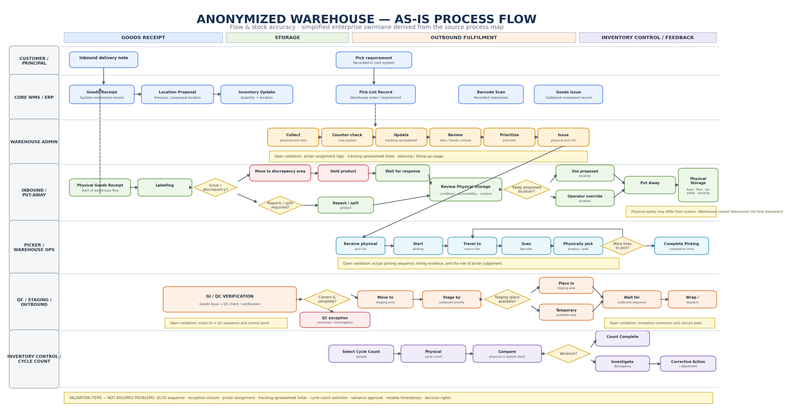
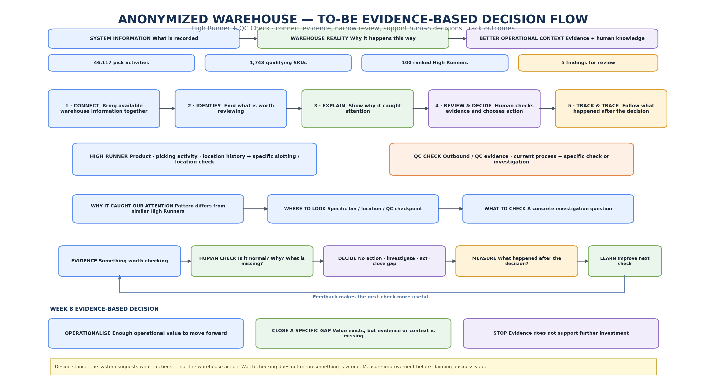

Warehouse Flow & Stock Accuracy Decision Support
Connecting recorded warehouse data with physical operational context to identify what is worth checking, support human decisions, and measure what happens after the decision.
Transformation objective
The objective is not a dashboard. The target is a useful operational decision with a measurable result.
AS-IS process architecture
The current operating model spans goods receipt, put-away, Admin planning, physical picking, QC / staging / outbound and cycle-count control. System information and physical warehouse reality do not always contain the same context, so the analysis explicitly separates information flow from physical flow.

What remained to validate
The discovery work deliberately separated known process facts from validation questions.
These are validation items — not assumed problems.
High Runner MVP
What a useful finding must explain
Worth checking does not mean something is wrong. The output is a specific check, not an automatic decision.
TO-BE decision model
The target operating model connects evidence to a human review loop rather than replacing warehouse judgement.

Human-in-the-loop design
- pattern detection
- evidence comparison
- ranking / narrowing
- specific review questions
- case and outcome tracking
- is this normal?
- why does it happen?
- what would you check?
- what information is missing?
- what action should happen next?
High Runner and QC
| Capability | System role | Human role |
|---|---|---|
| High Runner | Connect activity, order and location evidence; narrow many candidates to specific review findings. | Explain warehouse reality and decide whether to keep, investigate or act. |
| QC Check | Surface available QC evidence and frame what needs checking. | Confirm the real control point, exception path and final operational disposition. |
PoV delivery model
Measurement before value claims
Operational improvement is measured first. Business value is discussed after evidence exists.
Interactive prototype
The synthetic prototype demonstrates the public-facing operating concept: High Runner evidence, QC review, human decisions and Track & Trace.
Open interactive prototype →